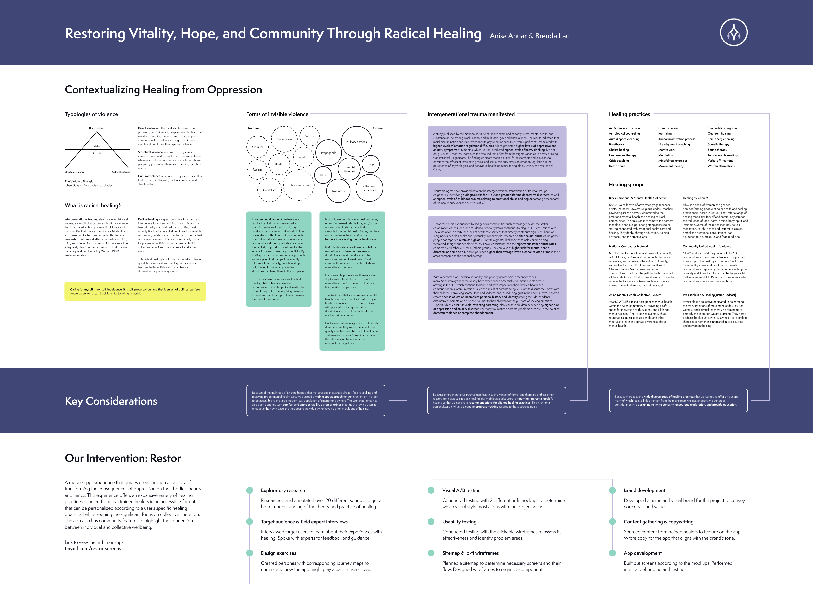

PROJECTS > RESTOR (RADICAL HEALING APP)
Restor is not only the last project I completed at Northeastern, but it was also the longest. For our interaction design capstone, we spent one whole academic year with the same team and project idea. We followed a thorough procedure, from research to ideation to pitching to team formation to project development. The first four steps were completed within the first couple of months, and the rest of the year was spent on designing and iterating on the app. This procedure also included target user and expert interviews, as well as my favorite step: persona building. You can view the complete process in our process book.
Fun fact: My capstone team was the only two-member group in the entire class, including the other capstone section.
All the other groups consisted of 4 or 5 members. Our team ending up so small was largely due to our motivations behind the project. Brenda (my amazing capstone partner) and I shared a common interest in creating an app for underserved populations. Restor was entirely Brenda's idea - the project I pitched initially was a virtual social justice toolkit directory. The intentions behind my proposed directory were to create something accessible to empower the community. Brenda's idea for an app specifically created for minority groups did exactly that and I was immediately hooked.
During team formation, we were unable to find other team members interested in our project. That resulted in us having two options: either we persist and be held to the same standards as a 3- or 4-person group, or we split up and join other groups. As you can tell, we both chose to commit to our project.
Despite the obstacles and the pressure placed on me and Brenda, we managed to create an app that we were both extremely proud of. While we weren't able to achieve as high a fidelity as the other groups, we found that we made incredible progress on the app given that Brenda was the sole designer and I was the sole developer.
So what is Restor? As the poster below states, Restor is a mobile app experience that guides users through a journey of transforming the consequences of oppression on their bodies, hearts, and minds. The app offers curated healing practices sourced from real, trained healers. Restor is meant to be accessible to all and is a personalized experience for each user, tailored to set healing goals. The app also has community features that highlight the connection between individual and collective wellbeing.
Below are representations of two different points in our development process. On the left is a recorded walkthrough of an early prototype. On the right is our final poster, created by my capstone partner, Brenda Lau. We presented this poster at the end of the year to our capstone class.
**Note: This poster is best viewed in full-screen.**
To finish off the year, we submitted three main pieces to be evaluated by our professors: a final poster (above), a process book (at the end of this page), and a final walkthrough (below). In this video, I guide the viewer through the app from registration to setting user goals to completing healing exercises with a group. You can see the huge difference from our prototype (shown in the video above, left). This change was completed in six weeks, starting with Brenda's redesigned VD specs and ending with my updates in Swift.
While the app is still missing a moderate amount of the features we intended to implement, the walkthrough gives a good sense of what we were trying to accomplish. Perhaps with a full team, we would be able to bring the app to the place we envisioned.
As introduced, Restor endured a lengthy process. I designed this process book specifically to highlight significant moments throughout the year and give context to each step. The book is filled with visuals to document our progress.
{kind=link}